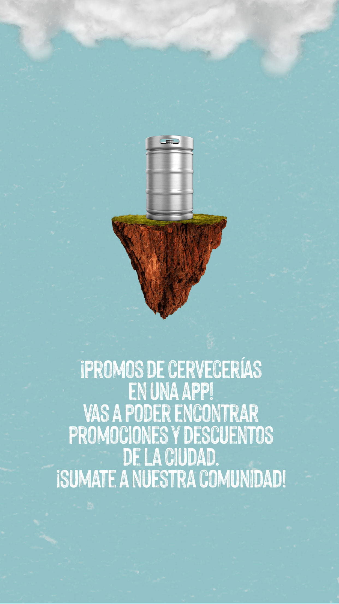
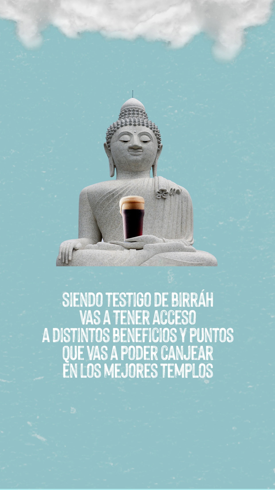

<ion-content class="dark-bg">
    <ion-grid>
        <ion-slides pager="true">
            <!-- [options]="slideOpts" -->
            <ion-slide>
                <ion-row>
                    <ion-col class="slide-img tutorial-1 ion-no-padding" size="12">
                        
                    </ion-col>
                </ion-row>
            </ion-slide>
            <ion-slide>
                <ion-row>
                    <ion-col class="slide-img " size="12 ">
                        
                    </ion-col>
                </ion-row>
            </ion-slide>
            <ion-slide>
                <ion-row>
                    <ion-col class="slide-img " size="12 ">
                        
                    </ion-col>
                </ion-row>
            </ion-slide>
        </ion-slides>
        <ion-row class="row-btn-tutorial ">
            <ion-col class="btn-tutorial ">
                <ion-button [routerLink]=" '/tabs/home/' " routerDirection="forward " class="yellow-button continuar-tutorial " expand="full ">
                    Continuar
                </ion-button>
            </ion-col>
        </ion-row>
    </ion-grid>
</ion-content>